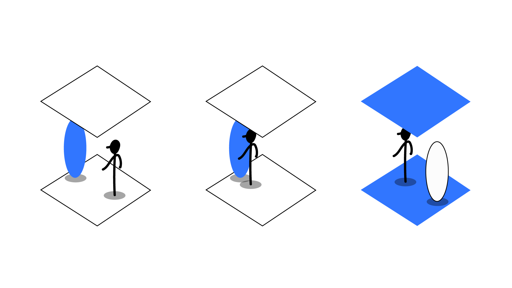
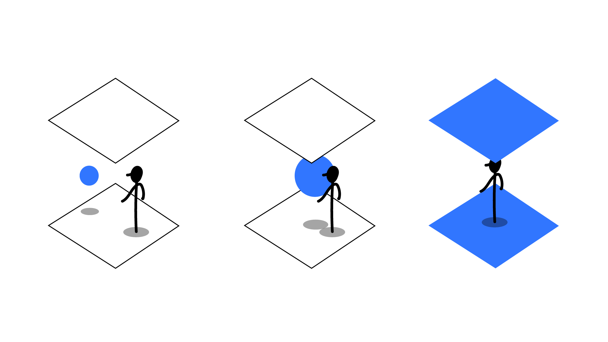
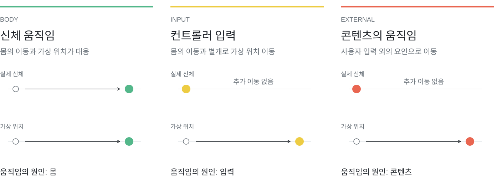
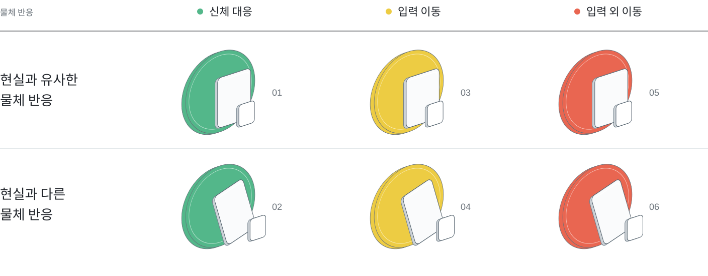
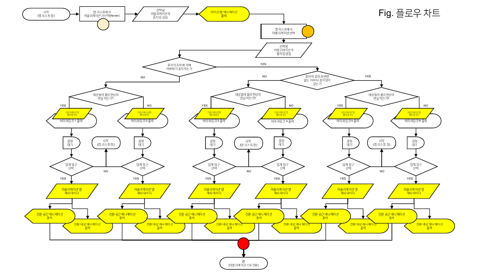
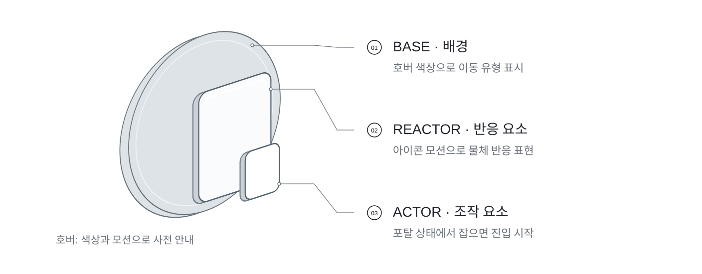
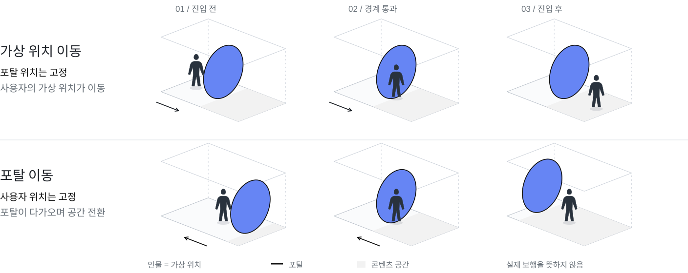
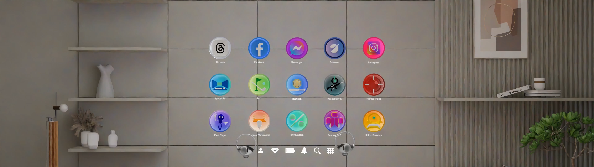

제안부터 완료까지 PM으로 맡은 범위
앱을 고를 때 다음 공간의 움직임과 반응을 예상하기 어려움
제안·선정부터 완료까지 PM. 지도교수·연구원과 인터뷰·분석·설계·제작 공동 진행
콘텐츠 차이를 공통 분류로 정리하고 예고·미리보기·진입에 연결
3개 움직임 유형의 VR 프로토타입과 최종 보고. 사용자 효과는 미측정
앱을 고르기 전에는 알 수 없는 다음 공간의 움직임
VR 콘텐츠의 이름과 썸네일만으로는 몸과 아바타의 움직임, 공간 속 대상의 반응을 알기 어렵습니다. 프로젝트는 콘텐츠 선택과 실제 진입 사이에 다음 경험의 특성을 읽을 수 있는 단계를 두었습니다.
초기에는 HMD를 쓰고 벗을 때의 현실·가상 간 괴리감을 다뤘습니다. 움직임과 환경을 미리 알면 멀미가 우려되는 콘텐츠를 피할 수 있다는 인터뷰 의견을 바탕으로, 콘텐츠 선택과 입장 사이에서 경험을 미리 알려주는 문제로 범위를 좁혔습니다.
사용자가 알아야 할 것
내 몸과 아바타는 어떻게 움직이는가?
컨트롤러 입력 외에 이동이 발생하는가?
공간 속 대상은 어떻게 반응하는가?
설계가 다룬 범위
콘텐츠를 고르는 화면부터 게이트를 살펴보고 진입하는 순간까지. 콘텐츠 자체의 재설계보다 경험을 예고하는 공통 구조를 다뤘습니다.
경험의 예고와 공간 전환을 함께 다룬 설계 과제
최종 발표에서 제시한 목표는 두 가지였습니다. 사용자가 다음 콘텐츠의 경험을 미리 예상하게 하고, 선택에서 진입까지의 자극 변화를 연속적으로 연결하는 것입니다.
기존 진입 구조의 문제
평면적인 홈 UI에서 콘텐츠를 실행하면, 다음 공간의 움직임과 반응을 미리 파악하기 어려웠습니다. 프로젝트는 이 선택과 실행 사이의 비연속적인 전환을 문제로 정의했습니다.
제안한 개입 지점
안이 보이는 창이 달린 문처럼, 게이트 너머의 경험을 살펴보고 직접 진입하게 했습니다. 전체 시나리오에서 ‘무엇을 고를까’ 다음에 ‘어떤 경험일까’를 확인하는 단계를 배치했습니다.
하드웨어 지연과 경험을 예상하기 어려운 문제를 구분하고, 이 프로젝트는 경험의 예고와 공간 전환을 다뤘습니다. 멀미 감소는 설계 목표이며, 개선 효과는 측정하지 않았습니다.
근거: META 최종 발표자료 3·8–12p 및 발표 노트.
전환 형태 탐색에서 콘텐츠별 규칙으로
문을 통과할 것인가, 다음 공간이 다가올 것인가. 초기에는 사용자와 공간의 이동 관계를 여러 방식으로 탐색했습니다.


설계 과정과 근거 자세히 보기
초기 팀 자료에서는 ‘자연스러운 공간 전환’이라는 넓은 목표를 여러 전환 방식으로 탐색했습니다. 문을 통과하기, 작은 오브젝트 안으로 들어가기, 오브젝트가 확대되기, 벽이 다가오기 등 서로 다른 공간 관계를 검토했습니다.
초기 탐색의 질문
홈과 앱을 독립된 공간으로 느끼게 할 것인가, 홈 안에 담긴 작은 공간으로 느끼게 할 것인가? 사용자가 움직일 것인가, 다음 공간이 사용자에게 다가올 것인가?
구체화된 설계 과제
최종안에서는 단순히 전환 형태를 정하는 데서 나아가, 다음 앱의 움직임과 반응에 맞춰 전환 방식을 구분했습니다. 공간 전환 자체가 콘텐츠 특성을 전달하는 단계가 되도록 전체 시나리오를 구성했습니다.
이 과정은 하나의 전환 애니메이션을 모든 콘텐츠에 적용하는 대신, 콘텐츠의 차이를 먼저 정의하고 그 차이에 맞는 동작을 설계하는 방향으로 정리됐습니다.
근거: 0212 정보 전환 원리 제안 5–18p · 1006 최종 발표 12–17p. 초기 탐색은 팀 작업입니다.
게임·앱 후보 60개를 같은 기준으로 비교한 분류
게임 30개·앱 30개 후보를 공통 기준으로 비교하고, 최종적으로 아바타의 움직임과 물체의 반응을 안내할 두 축으로 정리했습니다.
두 축을 고른 기준은 ‘누가 판단해도 같은 결론에 도달할 수 있는가’였습니다. 초기 분석의 다섯 관점 중 스타일에 대한 인상처럼 사람마다 갈리는 항목보다, 이동과 반응처럼 구분 가능한 특성을 안내 기준으로 남겼습니다. 분류가 불명확한 후보는 보류했습니다.
후보 비교에서 읽어낸 차이
60개 후보 중 6개 발췌. ‘설계에서 읽을 점’은 당시 분류가 최종 설계로 이어진 지점입니다.
| 앱 후보 | 당시 이동 분류 | 설계에서 읽을 점 |
|---|---|---|
| Beat Saber | 이동 없음 ( 신체 이동 동기화 ) | 신체와 아바타의 대응을 안내 |
| Gorilla Tag | 입력에 의한 좌표 이동 ( 연속 ) | 입력으로 더해지는 이동을 안내 |
| BONELAB | 입력되지 않은 좌표 이동 | 입력 외 이동을 사전에 예고 |
| YouTube VR | 이동 없음 ( 콘텐츠에 따라 ) | 선택한 콘텐츠에 따라 달라지는 경우 |
| Gravity Sketch | 이동 없음 ( 신체 이동 동기화 ) | 사용자가 크기를 바꾸는 경우 |
| Holofit by Holodia | ? | 당시 판단을 보류한 후보 |
최종안은 움직임의 원인을 세 가지로 구분해 진입 전에 예고합니다. ‘콘텐츠에 따라’ 또는 ‘?’로 표시된 후보는 당시 판단을 보류한 항목입니다.
대표 6개의 5개 분석 축 보기
on/off, ??, ? 표기는 당시 분석 기록이며, 현재 앱 사양에 대한 평가가 아닙니다. 모바일에서는 좌우로 밀어 볼 수 있습니다.
| 앱 후보 | Gravity | Scale | Object | Time | Environment |
|---|---|---|---|---|---|
| Beat Saber | 이동 없음 ( 신체 이동 동기화 ) | 비통상적 | 변화 없음 | 재질 :on | 형태 :on | 빛 :on | 없음 | 흐름 | 인위적 | 실내 | 인공 | 동적 |
| Gorilla Tag | 입력에 의한 좌표 이동 ( 연속 ) | 차이 없음 | 변화 없음 | 재질 :off | 형태 :off | 빛 :off | 있음 | 흐름 | 자연 | 혼합 | 자연 | 정적 |
| BONELAB | 입력되지 않은 좌표 이동 | 차이 없음 | 변화 없음 | 재질 :on | 형태 :on | 빛 :on | 혼합 | 혼합 | 혼합 | 혼합 | 인공 | 혼합 |
| YouTube VR | 이동 없음 ( 콘텐츠에 따라 ) | 입력한 차이 | 변화 없음 | 선택한 콘텐츠에 따라 | 없음 | 멈춤 | 인위적 | 실내 | 인공 | 정적 |
| Gravity Sketch | 이동 없음 ( 신체 이동 동기화 ) | 입력한 차이 | 입력한 변화 | 재질 :off | 형태 :?? | 빛 :on | 없음 | 멈춤 | 인위적 | 실내 | 인공 | 정적 |
| Holofit by Holodia | ? | ? | ? | ? | ? |

판단 기준: 누가 분류해도 같은 결론에 도달할 수 있는가?
설계 과정과 근거 자세히 보기
팀은 Quest의 게임·앱 인기 목록을 후보로 삼고, 사용자가 인지하는 ‘변화’를 중심으로 비교했습니다. 분류표에는 게임 30개와 앱 30개, 총 60개 후보 행이 정리돼 있습니다.
“누가 판단하더라도 같은 결론이 가능한 기준일 것.” 초기 분석 문서가 명시한 원칙입니다. 스타일에 대한 인상보다 이동과 반응처럼 구분 가능한 특성을 찾고자 했습니다.
폭넓게 살핀 다섯 축
Gravity는 현실과 가상 이동의 차이, Scale은 익숙한 크기와 변화, Object는 표현 방식, Time은 시간의 인식, Environment는 공간의 특성을 비교했습니다.
최종 동작으로 연결한 두 축
내 움직임과 아바타가 어떻게 대응하는지, 공간 속 물체가 현실의 예상과 어떻게 다른지를 안내 기준으로 구성했습니다. 이 두 축은 게이트의 반응과 앱 진입 동작으로 연결됩니다.
초기 표에서 신체 이동 동기화로 분류
입력에 의한 연속 좌표 이동으로 분류
입력되지 않은 좌표 이동으로 분류
당시 분류표에는 ‘논쟁거리’, 물음표, 콘텐츠에 따라 달라지는 항목도 있었습니다. 60개는 후보 조사 범위이며, 사용자 60명을 대상으로 한 검증이 아닙니다.
근거: 0313 앱 후보 리스트와 분류 2–6p.
콘텐츠가 달라도 같은 기준으로 예고할 수 있다는 가설

앞의 두 축을 조합하면 움직임 3유형 × 반응 2유형, 여섯 가지 안내 규칙이 됩니다.
몸과 아바타의 움직임이 대응
입력에 따라 이동이 더해짐
신체·입력과 무관하게 이동
움직임과 반응의 특성을 진입 전에 예고하면, 사용자가 다음 경험을 예상하는 데 도움이 될 수 있다.
상태와 조건으로 나눈 동작 시나리오
앱의 특성 → 탐색 중 피드백 → 진입 조건을 연결했습니다. 시나리오를 상태와 분기로 구체화한 중간 기획입니다.

가선택 → 포탈 확인 → Actor 선택 → 앱 진입
설계 과정과 근거 자세히 보기
중간 기획에서는 홈·가선택·포탈·앱을 상태로 나누고, 각 상태에서 사용자의 입력과 화면 반응을 연결했습니다. 전체 시나리오를 화면 간 이동뿐 아니라 조건에 따라 달라지는 동작으로 구체화한 자료입니다.
아이콘을 지시하면 앱 특성을 예고하고, 오브제의 반응을 표시
선택한 앱의 포탈을 열고 Actor와 Reactor의 위치·움직임 정의
Actor를 잡는 입력을 앱 진입과 연결하고 움직임 유형에 따라 전환
이 단계에서 콘텐츠 분류를 실행 흐름으로 연결했습니다. 분류 결과에 따라 예고 정보와 전환 동작이 달라지고, 사용자의 선택이 다음 단계로 넘어가는 조건이 됩니다.
중간 기획에는 속도·화각·포탈 이동에 대한 탐색안이 함께 들어 있습니다. 모든 탐색안이 최종 구현에 반영된 것은 아닙니다.
근거: 0717 전환 시퀀스 2–3p · 0718 아이콘 to 앱 전체 기획 2–3p.
분류를 선택·진입 동작으로 옮긴 안내 규칙
분류 체계를 게이트의 형태·색·모션에 연결하고, 다음 공간을 살펴본 뒤 직접 진입하는 흐름으로 구현했습니다.
색과 아이콘으로 다음 경험을 예고
게이트 너머의 공간을 살펴보기
다음 콘텐츠의 움직임을 경험
안내 규칙을 실제 조작으로 연결하기

동작 규칙 자세히 보기
게이트를 Base·Reactor·Actor로 나눴습니다. Base의 색은 이동 유형을, Reactor의 모션은 대상의 반응을 나타냅니다. 사용자가 잡는 Actor는 다음 공간으로 진입하는 매개체입니다. 분류한 특성이 화면의 설명에 머무르지 않고 사용자가 보고 조작하는 요소에 대응하도록 설계했습니다.
진입 전환에도 다음 경험의 특성 반영하기

동작 규칙 자세히 보기
전체 시나리오는 특성 확인 → 아이콘 확장 → 공간 미리보기 → 잡고 진입하기로 구성했습니다. 신체 대응 유형은 고정된 포탈의 경계를 아바타가 통과하고, 추가·강제 이동 유형은 포탈이 다가와 시야를 감싸는 방식으로 표현했습니다. 여기서 아바타의 이동은 실제 보행과 구분됩니다.
단계별로 다르게 전달하는 정보

콘텐츠의 행동이 현실의 예상과 같은지, 다른 반응을 갖는지 탐색
활성화된 포탈 안에서 다음 경험의 형태와 움직임 규칙 확인
Actor를 잡고 진입하며 다음 콘텐츠의 움직임 특성을 먼저 경험
최종 발표에서는 이 세 단계를 연결한 전체 UI 시퀀스를 제시했습니다. 분류표뿐 아니라, 분류한 정보를 사용자가 어느 순간에 받아들이는지까지 시나리오로 구체화했습니다.
근거: META 최종 발표자료 13–17p 및 발표 노트.
META · Threshold Space / VR 프로토타입
공통 규칙을 적용한 VR 프로토타입 3종
움직임 대응 3유형 · 행동 특성 2유형
분류와 동작을 연결한 프로토타입
Rhythm Ball, Fighter Plane, Fantasy FPS의 3종 VR 프로토타입에 공통 규칙을 적용했습니다. XR Hub Korea Innovation Conference 발표 자료와 시연 영상을 준비했고, 현장 발표는 다른 팀원이 맡았습니다. Cumulus 2025에서는 직접 포스터 발표를 진행했습니다.
특허명세서와 구현 범위 확인
시각적 제안을 시스템의 설명으로 정리
관련 특허명세서는 앱 선택 시 움직임 특성을 미리 보여주는 하이퍼링크 시각화 체계와 상호작용을 설명합니다. 아바타 움직임 3유형과 물체 반응 2유형의 조합, 가선택·선택·전환 단계가 문서화돼 있어 최종 화면을 넘어 동작 원리까지 정리한 근거로 활용했습니다.
검토 의견으로는 가선택과 본선택 도면의 구분, Actor 선택의 가시성, 입력 도구의 표현을 명확히 하라는 보완 요청이 있었습니다. 명세서는 청각·촉각 피드백을 구체적인 예시 없이 다루고, 예시는 컨트롤러 구현으로 한정했습니다.
근거: 특허명세서 본문과 검토 의견. 출원·등록 여부는 이 사례의 성과에 포함하지 않습니다.
예고한 특성을 사용자가 실제로 이해하는지, 진입 후 경험과 일치한다고 느끼는지 확인해야 합니다.